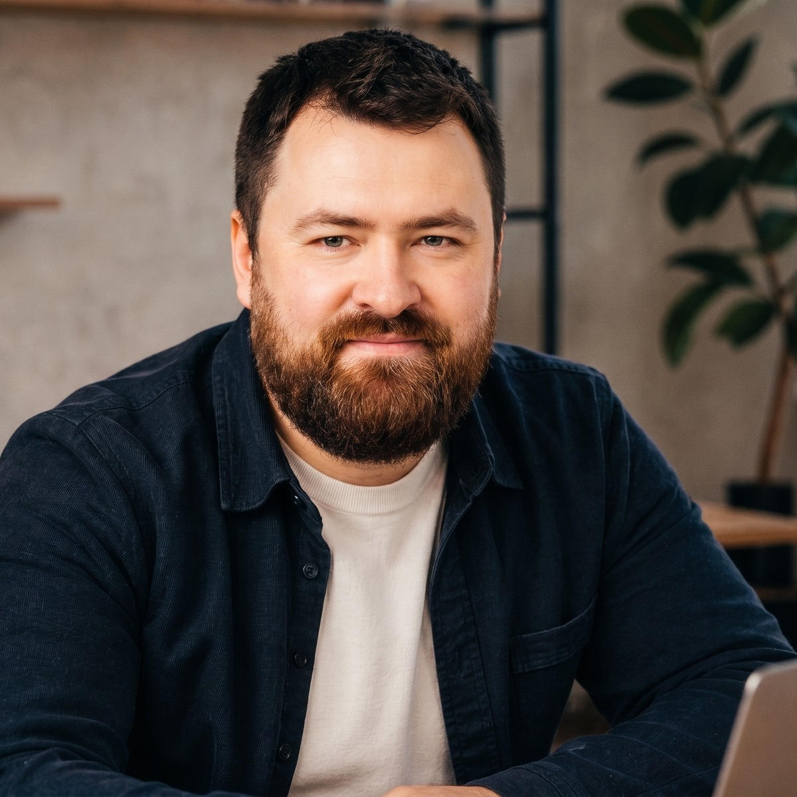

Выстраиваю систему роста продаж для Big Bro Burger и Gusto Pizza
Сейчас задача не в том, чтобы “вести соцсети” или “настроить рекламу”. Задача - остановить падение чеков, собрать управляемый маркетинг с нуля и превратить 5 ресторанов в единую систему повторных заказов, локального спроса и понятных офферов.
Бургеры, боксы, шаурма и снеки для сильного голода.
Неаполитанская пицца, паста и комбо для вечера.
Наборы для офиса, семьи, компании и самовывоза.
CRM-сценарии, бонусы и любимый заказ в один клик.
01. Анализ ниши и текущей ситуации
Что видно по входным данным
- Маркетинг нужно строить почти с нуля: УТП не сформировано, воронок нет, аналитика кроме выгрузки трафика не ведётся.
- Трафик в чеках падает второй месяц подряд: апрель к марту -14,5%, май к апрелю -15,3%.
- Средний уровень за 3 месяца - 12 332 чека, но май уже ниже среднего на 1 944 чека.
- Оба бренда имеют продуктовую базу: Big Bro - бургеры, шаурма, снеки; Gusto - неаполитанская пицца, паста, комбо.
Разбор вакансии и запроса
- По публичным зеркалам вакансии: компания «Расцвет-Юг», направление Big Bro / Gusto Pizza, позиция маркетолога в офис, ориентир оплаты от 70 000 ₽.
- Реальная функция вакансии шире обычного маркетолога: требуется человек, который соберёт систему продаж, аналитику, офферы, рекламу и регулярное управление каналами.
- Ключевая боль для собственника: падение чеков уже видно, а управляемой маркетинговой модели пока нет.
- Вывод: нужен не исполнитель отдельных задач, а внешний CMO/Head of Marketing с командой подрядчиков и понятной ответственностью за рост продаж.
Почему это решаемо
Рынок доставки еды уже стал обязательной частью ресторанного бизнеса: по Data Insight, доставка есть у 64% заведений общепита в России. Значит, конкуренция высокая, но инструменты понятны: локальный поиск, карты, агрегаторы, CRM-повторы, акции, performance и контроль юнит-экономики.
Дополнительный рыночный ориентир: по открытым обзорам, рынок готовой еды в России в 2025 году оценивается выше 1 трлн ₽, а HoReCa - в триллионы рублей. В такой категории выигрывает не тот, кто громче, а тот, кто точнее управляет повторными заказами и локальным спросом.
Инсайт для письма собственнику
Я бы не начинал с “креативов” или “ведения соцсетей”. Первые 2 недели нужно навести управляемость: понять, какие точки, блюда, акции и каналы реально дают чеки, после чего запускать рекламу и CRM не на охват, а на повторяемый заказ.
ЦА 1: быстрый обед
Офисные сотрудники, студенты, сотрудники ТЦ. Нужны скорость, комбо, понятный чек, повтор заказа.
ЦА 2: вечер дома
Семьи и пары. Нужны наборы, “на двоих/семью/компанию”, доставка без сюрпризов.
ЦА 3: компания
Дни рождения, вечеринки, просмотры матчей. Нужны большие комбо, предзаказ, выгода за объём.
02. Конкурентное поле
| Конкурент | Оффер / что видно | Сильная сторона | Уязвимость для атаки |
|---|---|---|---|
| Pizza House | Доставка еды в Симферополе, пиццерия на бул. Ленина 22/2, акцент на пиццу и бесплатную доставку по городу. | Локальный игрок, понятная доставка, широкий выбор пиццы. | Можно выигрывать более сильной упаковкой бренда, комбо и разделением ролей Big Bro / Gusto. |
| Ниндзя | Доставка еды в Симферополе, бесплатная доставка от 1000 ₽, акции и бонусы. | Сильный мультикухонный конкурент. | Можно выигрывать специализацией: бургер как продукт и неаполитанская пицца как вкус. |
| DARVIN | Доставка еды в Симферополе, среднее время 30-50 минут, кухни всего мира. | Широта меню, понятный delivery-оффер. | Размытое позиционирование: много всего, меньше фокуса. |
| Типичная Доставка | Комбо-пиццы, фикс-прайс наборы, много готовых предложений. | Сильная работа с выгодой и наборами. | Можно отстроиться качеством продукта и брендовым характером. |
| Майя | Пицца, роллы, бургеры, горячие блюда, супы, салаты. | Широкий ассортимент. | У Big Bro и Gusto можно сделать более чёткую роль каждого бренда. |
Вывод
Конкуренты продают либо скорость, либо широту меню, либо скидочные наборы. Свободная позиция для клиента: “две сильные специализации под разные сценарии еды” - мощный бургер/стритфуд и настоящая неаполитанская пицца.
Что нельзя делать
Нельзя объединять бренды в кашу “доставка еды”. Нужно развести роли: Big Bro закрывает голод, мясо, драйв, компанию; Gusto закрывает пиццу, пасту, итальянский вечер, семью и комбо.
03. Карта позиционирования
Незанятая ниша
Локальная ресторанная сеть с характером продукта и управляемой доставкой: не просто “привезём еду”, а “у нас есть правильный сценарий под ваш голод: бургер, пицца, комбо, офис, семья, компания”.
Стратегическое решение
Сделать два бренда не конкурентами внутри компании, а двумя входами в одну CRM-систему: разные креативы, разные офферы, единая аналитика, повторные касания и кросс-продажи.
04. Позиционирование клиента
Big Bro Burger
Большие бургеры и стритфуд для тех, кто хочет наесться по-настоящему.
Доказательства: меню с шеф-бургерами, котлетой из мраморной говядины или фермерской курицы, хитами, боксами, шаурмой, снеками и доставкой в Симферополе и Севастополе.
Gusto Pizza
Неаполитанская пицца, паста и комбо для вечера, семьи и компании.
Доказательства: пицца 26/35 см, паста, комбо, акции 3/5/7 пицц, быстрый delivery-аргумент “в районе 1 часа в любой конец города”.
Единое сообщение группы
Big Bro и Gusto - два локальных бренда еды в Крыму: когда нужен мощный бургер, настоящая пицца, быстрый обед или набор на компанию. Заказывайте напрямую, получайте бонусы и повторяйте любимые блюда в один клик.
05. Маркетинговая стратегия
Из “сайта с меню” в управляемую систему заказов, повторов и локального спроса.
Первый этап - не масштабирование бюджета, а сборка фундамента: аналитика, события, воронки, понятные офферы, сегменты и карта каналов. После этого подключается performance и CRM, чтобы каждый рубль рекламы работал не на разовый чек, а на повторный заказ.
1. Фундамент, 1-2 недели
Аналитика, цели, пиксели, коллтрекинг/события, аудит сайтов, карты, агрегаторы, разбор меню и маржинальности.
2. Запуск, 3-6 недели
Яндекс Директ, РСЯ, ретаргетинг, VK, Telegram, акции по сценариям, посадочные страницы и квиз под бренды.
3. Масштаб, 7-12 недели
CRM-повторы, бонусы, push/SMS/мессенджеры, работа с отзывами, SEO, локальные кампании по точкам.
Воронка
| Шаг | Механика | Метрика |
|---|---|---|
| Привлечение | Поиск “пицца/бургеры/доставка”, карты, агрегаторы, соцсети, посевы. | CTR, CPC, показы в картах. |
| Выбор | Оффер под сценарий: обед, семья, компания, late dinner, самовывоз. | Добавления в корзину, CR меню. |
| Заказ | Упрощение корзины, быстрый повтор, оплата, понятная доставка. | Заказы, средний чек, брошенные корзины. |
| Повтор | CRM: 3-й, 7-й, 14-й день; бонус за повтор; комбо по прошлому заказу. | Repeat rate, LTV, доля прямых заказов. |
06. Маркетинговый план и бюджет
Стартовый медиаплан нужен не “на всю страну”, а на две зоны: Симферополь и Севастополь, с раздельной аналитикой по брендам и точкам. Бюджет ниже - рабочая гипотеза на первый месяц, уточняется после доступа к Метрике, рекламным кабинетам, агрегаторам и маржинальности.
| Канал | Что делаем | Бюджет | Цель |
|---|---|---|---|
| Яндекс Директ | Поиск + РСЯ: доставка пиццы, бургеров, еды, конкуренты, бренд. | 180 000 ₽ | Заказы здесь и сейчас. |
| Карты и геосервисы | Яндекс/2ГИС: карточки, акции, фото, отзывы, маршруты, меню. | 40 000 ₽ | Локальный трафик в точки и доставку. |
| VK / Telegram Ads | Районы, интересы, ретаргетинг, промо наборов. | 90 000 ₽ | Спрос на комбо и повторные касания. |
| Посевы и блогеры | Локальные городские каналы, обзоры меню, промокоды. | 70 000 ₽ | Охват и доверие. |
| CRM / мессенджеры | Повторы, реактивация, промокоды, день рождения. | 35 000 ₽ | Снижение зависимости от платной рекламы. |
| SEO / контент | Страницы под блюда, районы, бренды, акции. | 35 000 ₽ | Органический спрос. |
| Итого | Первый тестовый месяц | 450 000 ₽ | Вернуть динамику и собрать управляемую модель. |
Сколько нужно заложить на старт
Итого на первый месяц: 180 000 ₽ работа Павла и команды + 450 000 ₽ рекомендуемый рекламный бюджет.
Рекламный бюджет оплачивается напрямую в кабинеты и сервисы клиента. Моя стоимость - управление маркетингом, аналитика, стратегия, постановка задач, контроль подрядчиков, запуск и оптимизация каналов.
Что входит в 180 000 ₽/мес
- Роль внешнего Head of Marketing / CMO.
- Сбор аналитики, KPI, отчётности и карты воронки.
- УТП, офферы, медиаплан, рекламные гипотезы.
- Постановка задач дизайну, сайту, рекламе, CRM и контенту.
- Еженедельный отчёт собственнику: цифры, выводы, решения.
Тест
120 000 ₽ работа + 250 000 ₽ реклама. Подходит, если нужно осторожно проверить спрос и собрать аналитику без агрессивного масштаба.
Рост
180 000 ₽ работа + 450 000 ₽ реклама. Оптимальный старт для 5 точек, двух городов и двух брендов.
Агрессивный рост
250 000 ₽ работа + 800 000 ₽ реклама. Подходит после подтверждения экономики: когда понятны CPO, средний чек и повторные заказы.
07. UX/UI аудит сайтов
Gusto Pizza 58/100
- Плюс: меню индексируется, есть акции 3/5/7 пицц, понятные цены.
- Минус: первый экран не формулирует УТП достаточно ясно, сайт выглядит как каталог.
- Минус: много длинного меню до блока преимуществ, нет сценариев “семья/компания/обед”.
- Решение: отдельные посадочные под акции, комбо и “неаполитанская пицца в Симферополе”.
Big Bro Burger 55/100
- Плюс: сильный продуктовый характер, много хитов, понятные категории.
- Минус: на странице сразу каталог, слабый первый оффер и мало объяснения “почему Big Bro”.
- Минус: не хватает сборки комбо и сценариев заказа для компании.
- Решение: hero с позиционированием, блок хитов, комбо, повтор заказа, отзывы и карты.
Приоритетные правки
| Правка | Эффект | Приоритет |
|---|---|---|
| Собрать первый экран: УТП, доставка, акции, CTA. | Рост клика в меню и корзину. | P0 |
| Развести сценарии: обед, семья, компания, самовывоз. | Рост среднего чека и конверсии. | P0 |
| Добавить события аналитики: клик, корзина, заказ, повтор. | Появится управляемость рекламы. | P0 |
| Сделать страницы акций и комбо под рекламу. | Снижение CPC/CPO за счёт релевантности. | P1 |
08. SEO и локальный поиск
SEO-аудит: стартовая оценка 52/100
- Есть меню и товарные карточки, но мало посадочных под спрос.
- Нужны страницы “доставка пиццы Симферополь”, “бургеры Симферополь”, “бургеры Севастополь”, “комбо пицца”, “доставка еды ночью/вечером”.
- Нужно связать SEO с карточками Яндекс/2ГИС и отзывами.
Ключевые группы запросов
- доставка пиццы Симферополь
- неаполитанская пицца Симферополь
- бургеры Симферополь доставка
- бургеры Севастополь доставка
- комбо пицца Симферополь
- доставка еды Симферополь / Севастополь
План на 3 месяца
| Месяц | Работы | Результат |
|---|---|---|
| 1 | Техаудит, мета, микроразметка, карта страниц, карточки заведений. | Основа для индексации и локального спроса. |
| 2 | Посадочные под блюда, районы, комбо и доставку. | Рост органических входов и качества рекламы. |
| 3 | Контент, отзывы, FAQ, сравнение сценариев, перелинковка. | Укрепление позиций и снижение зависимости от рекламы. |
09. Офферы
Рациональный
Горячий заказ без долгого выбора
Комбо под обед, вечер или компанию. Быстро выбрать, легко повторить.
Эмоциональный
Когда хочется нормальной еды, а не “что-нибудь”
Большие бургеры, пицца и комбо, которые закрывают вечер без готовки.
Конкурентный
Не безликая доставка, а два локальных бренда с характером
Big Bro для мощного голода, Gusto для пиццы и итальянского вечера.
Социальный
Еда, которую удобно брать на компанию
Наборы для друзей, семьи, офиса и вечеринки с понятной выгодой.
CRM
Повтори любимый заказ и получи бонус
Персональные предложения на 3-й, 7-й и 14-й день после заказа.
Локальный
Рядом с вами в Симферополе и Севастополе
Ближайшая точка, самовывоз, доставка и акции по району.
10. Рекламные объявления
Яндекс Директ: Gusto
Неаполитанская пицца в Симферополе
Пицца, паста и выгодные комбо. 3 пиццы за 999 ₽. Закажите доставку сегодня.
Яндекс Директ: Big Bro
Бургеры Big Bro с доставкой
Шеф-бургеры, шаурма, снеки и боксы. Большой вкус, быстрый заказ, доставка по городу.
Яндекс Директ: компания
Еда на компанию без долгого выбора
Пицца, бургеры, комбо и напитки. Подберите набор под офис, семью или друзей.
Telegram Ads
Вечер без готовки
Big Bro или Gusto? Бургер, пицца, комбо - выбирайте сценарий, а мы привезём.
VK
3 пиццы за 999 ₽
Пепперони, курица-грибы и 4 сыра. Забирайте комбо для вечера дома.
Ретаргетинг
Вы смотрели меню - оставим промокод?
Вернитесь к заказу сегодня и получите бонус к любимому блюду.
Нативный посев
“Нашли вариант для тех вечеров, когда готовить уже не хочется. В Big Bro берём бургеры и боксы, в Gusto - пиццу и пасту. Удобно, что можно выбрать по ситуации: на одного, на семью или на компанию. Для первого заказа дали промокод, а дальше обещают бонусы за повтор. Сохраняйте, пригодится в пятницу вечером.”
11. Прототип нового входа в заказ
Выберите сценарий - мы соберём вкусный заказ
Бургеры Big Bro, неаполитанская пицца Gusto, комбо для семьи, офиса и компании. Быстрый выбор, бонусы за повтор и доставка по Симферополю и Севастополю.
Подобрать заказВыберите сценарий выше.
Hero
Не каталог, а выбор сценария: “хочу бургер”, “хочу пиццу”, “нужен набор”.
Квиз
3-5 вопросов до готовой подборки. Без тяжёлой механики, но с событиями аналитики.
CRM
После заказа собираем повтор: бонус, любимое блюдо, промокод на следующий сценарий.
12. План работ на первые 4 недели
| Неделя | Что делаем | Результат недели |
|---|---|---|
| 1 | Доступы, аудит сайтов, Метрика, цели, события, карты, агрегаторы, выгрузки чеков, структура меню и маржинальности. | Понятная картина: где теряются заказы, какие точки и блюда продвигать. |
| 2 | УТП, офферы, посадочные под акции, карта рекламных кампаний, CRM-сценарии, ТЗ на правки сайтов. | Готов фундамент запуска, тексты, объявления, события и посадочные. |
| 3 | Запуск Директа, VK/TG, ретаргетинга, карт, первых посевов, тест промокодов по брендам. | Первые данные по CPO, конверсии и спросу по сценариям. |
| 4 | Оптимизация, отключение слабых связок, усиление рабочих офферов, CRM-повторы, отчёт собственнику. | Первая управляемая модель: бюджет → заказы → повтор → выручка. |
Формат отчётности
Ежедневно в Telegram: что запущено, бюджет, заказы/лиды, проблемы, решения. Раз в неделю: таблица KPI, выводы, план на следующую неделю.
Первое ключевое действие
Собрать сквозную таблицу: дата, точка, бренд, канал, чеки, выручка, средний чек, промокод, повтор. Без этого маркетинг останется набором мнений.
Источники для подготовки
Сайты клиента: gusto-pizza.online, bigbroburger.online. Открытые источники: Data Insight по доставке еды, TAdviser по рынку готовой еды, сайты и выдача конкурентов в Симферополе и Севастополе. Данные клиента: чеки март 14 345, апрель 12 262, май 10 388.
Павел Фролов - маркетинг-директор, который отвечает за систему продаж
Я захожу в проект не как “специалист по рекламе”, а как внешний Head of Marketing: нахожу, где теряются деньги, собираю офферы, аналитику, сайт, рекламу, CRM и команду в один управляемый контур.

Моя роль в проекте
Я беру на себя маркетинг как управленческую функцию: от стратегии до ежедневных решений по каналам, гипотезам и подрядчикам. Для Big Bro и Gusto это значит не “посты и объявления”, а понятная система: чек, заказ, повтор, выручка, экономика.
Почему это подходит Big Bro и Gusto
У вас уже есть продукт, точки, меню и поток чеков. Не хватает связки между спросом, каналами, офферами и повторными покупками. Моя роль - быстро собрать эту связку, чтобы маркетинг перестал быть набором активностей и стал управляемым механизмом роста.
Первый фокус - вернуть просевший объём чеков. Второй - увеличить повторные заказы и средний чек. Третий - масштабировать только те каналы и офферы, где видна экономика.
Формат сотрудничества
| Роль | Удалённый CMO / Head of Marketing с подключением команды под задачи. |
|---|---|
| Коммуникация | Ежедневный короткий статус в Telegram, еженедельный отчёт по KPI, отдельные созвоны по решениям собственника. |
| Первые 30 дней | Аналитика, офферы, рекламные запуски, карты, ретаргетинг, CRM-повторы, первые выводы по экономике. |
| Контакты | pavelfrolof.ru · wwwfrolof@yandex.ru · +7 905 939-08-74 |